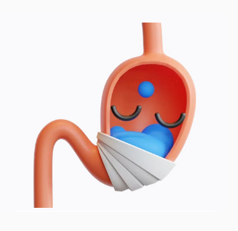

Gastrítis Aguda
La gastritis aguda es una inflamación súbita y temporal de la mucosa gástrica, la capa que recubre el revestimiento interno del estómago. Esta condición puede ser causada por diversas razones, como infecciones bacterianas, el consumo excesivo de alcohol, el uso prolongado de medicamentos antiinflamatorios no esteroides (AINEs) o por estrés intenso. Los síntomas comunes incluyen dolor abdominal, náuseas, vómitos, sensación de plenitud y malestar estomacal. La mayoría de los casos de gastritis aguda son autolimitados y mejoran con medidas de cuidado y tratamiento adecuados.

Gastrítis Crónica
La gastritis crónica es una condición en la que la inflamación de la mucosa gástrica persiste durante un período prolongado de tiempo. Puede ser causada por factores como una infección crónica por la bacteria Helicobacter pylori, el consumo continuado de alcohol, el uso prolongado de AINEs, trastornos autoinmunes o trastornos de la secreción de ácido en el estómago. Los síntomas pueden ser similares a los de la gastritis aguda, pero en algunos casos, los pacientes pueden ser asintomáticos. El tratamiento de la gastritis crónica implica abordar la causa subyacente y adoptar cambios en el estilo de vida y la alimentación.
Cáncer de Estómago
El cáncer de estómago es una enfermedad maligna que se origina en las células del revestimiento interno del estómago. Se diagnostica en etapas avanzadas. Los factores de riesgo incluyen la infección crónica por Helicobacter pylori, antecedentes familiares de cáncer gástrico y ciertas enfermedades genéticas. Los síntomas pueden variar, pero pueden incluir pérdida de peso, dolor abdominal, vómitos, dificultad para tragar y sangrado gastrointestinal. El tratamiento depende de la etapa del cáncer y puede involucrar cirugía, radioterapia, quimioterapia u otros enfoques terapéuticos específicos.